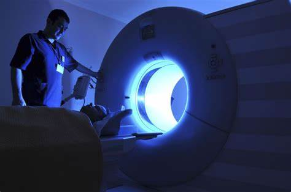

La medicina nuclear es una especialidad médica fascinante que utiliza materiales radioactivos para diagnosticar y tratar una variedad de condiciones de salud. En este artículo, exploraremos en detalle qué es la medicina nuclear, sus aplicaciones en el campo de la salud y cómo puedes especializarte en esta área. ¿Para qué sirve la medicina nuclear? La medicina nuclear, tiene una amplia gama de aplicaciones en el diagnóstico y tratamiento de enfermedades. Se utiliza para detectar condiciones como cáncer, enfermedades cardíacas, trastornos del tiroides, enfermedades óseas, trastornos neurológicos y más. Además del diagnóstico, la medicina nuclear también se utiliza en terapias dirigidas, como el tratamiento de cáncer de tiroides y el alivio del dolor en pacientes con metástasis óseas. 